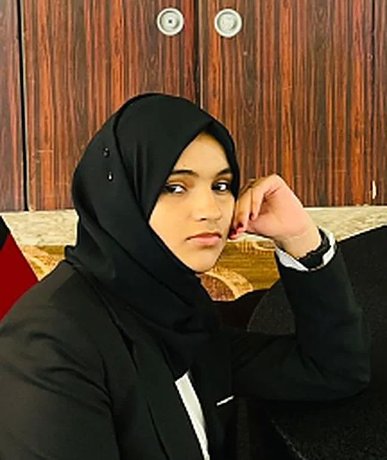

Alhan AyshaAbdul Khader
A CBSE student at GEMS Our Own English High School, Dubai, with yearly averages of 90–97% and merit certificates every year since Grade 7. Ei ASSET UAE National 2nd Runner-Up in 2025, twice selected for Dubai’s A Genius Within programme with both projects named among the best, and a member of the GEMS Genius gifted programme.
Around a dozen projects so far, from healthcare apps to a Top 8 design in the DIDI × MillerKnoll challenge, taking working apps from idea to deployment with AI coding and hosting tools. Gold at the Global Innovation Challenge and a finalist at the Masters’ Union AI Buildathon.
Digital Literacy Deputy Captain in Grade 7 and Mars House Prefect from Grades 8 to 10. A peer mentor and volunteer who speaks with confidence at MUN, Islamic JAM and project presentations, and writes poetry on causes worth acting on.

- Toolkit
- AI coding: Kiro, CursorGitHubVercelWixCanvaMinecraft EducationProto.ioAdobe XD
- Languages
- EnglishMalayalamHindiArabic (basic)
- Beyond
- Karate, blue beltCanvas painting
Selected honours
The four results that matter most. Select one to see the certificate.
An ambitious student who can strike a perfect balance between academics and co-curricular activities.
Featured projects
Select a project to see the contest, the placing and the certificate.
Auxillium
An AI-powered healthcare app designed to widen access to care in rural communities.
Novara
A sustainable, accessible furniture design for more inclusive workplaces.
HealthConnect
A health-tech app that connects people with wellness and medical support.
Tranquillix
A wellbeing app built around SDG 3, Good Health and Wellbeing.
NeuroEase
An assistive-technology system that supports people with autism in daily life.
DataBridge
A sustainability-focused student community app that links students with mentors and research opportunities.
WordWise
An interactive app that helps non-native speakers improve their English pronunciation, vocabulary and grammar.